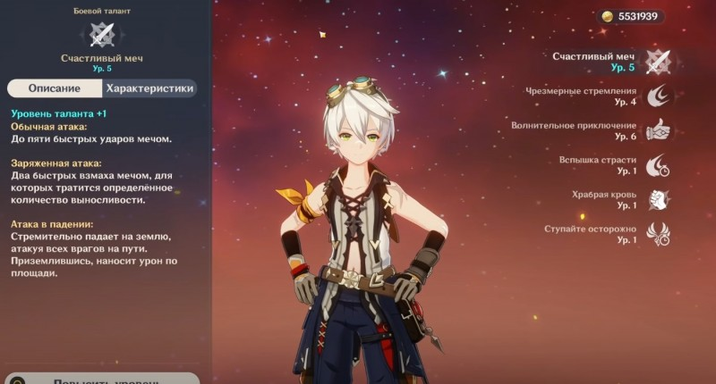
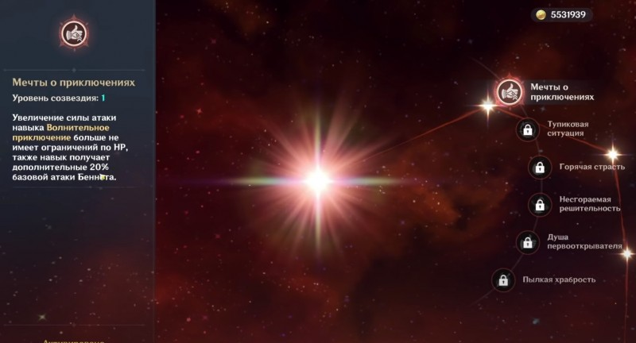

В Genshin Impact Беннет является прекрасным 4-звездочным персонажем поддержки, который относится к Пиро классу и использует в бою одноручный меч. Благодаря своим уникальным способностям он может дополнить практически любую команду. В этом руководстве мы расскажем про его лучшие билды, оружие и артефакты.
Учитывая характеристики этого паренька, он может неплохо проявить себя в сражениях с боссами, однако лучше всего этот герой показывает себя, когда занимается поддержкой отряда. К его основным преимуществам можно отнести:
Наличие заряжаемого элементального умения, то есть при длительном зажатии кнопки навыка его эффект становится еще сильнее.
Стихийный взрыв повышает бонус атаки и восстанавливает очки здоровья всем героям, находящимся в определенной области.
Способен снижать время отката умений.
Если же говорить о недостатках персонажа, то у него можно найти только один минус – при использовании заряженной способности герой немного отлетает назад, из-за чего приходится постоянно осуществлять рывки вперед, чтобы вернуться на поле боя.
Поддерживайте отряд «Волнительным приключением» Стихийный взрыв персонажа исцеляет его и других членов отряда, если уровень их здоровья ниже или равен 70%. В случае, если их шкала жизни выше 70%, то они получают бонус к атаке, зависящий от базовой атаки героя.
Данная способность создает большое временное окно для вашей группы, в рамках которого она может нанести огромный урон окружающим врагам. При этом она исцеляет всех бойцов, не давая им умереть. Ее можно также использовать во время кооперативной игры.
Открыв талант 1-го уровня «Мечты о приключениях», вы сможете повышать силу атаки персонажей «Волнительным приключением», даже если их показатель HP ниже 70%.
Не используйте элементальный навык рядом с обрывом Элементальное умение «Чрезмерные стремления» – это мощная способность, имеющая один огромный недостаток. После достижения 2-го уровня заряда она отбрасывает Беннета назад при использовании. Поэтому не рекомендуем применять ее, стоя спиной к обрыву, иначе можно случайно упасть в пропасть.
Впрочем, данный эффект отменяется, если использовать навык в пределах области действия круга вдохновения, созданного с помощью стихийного взрыва.
Полезен для экспедиций Благодаря пассивному таланту Беннета «Ступайте осторожно» время, затрачиваемое на экспедиции в Мондштадте, будет сокращено на 25%.
Это позволит вам быстрее завершить экспедицию и собрать больше материалов за определенный отрезок времени. Поэтому мы рекомендуем как можно чаще отправлять его на подобные задания.
Если говорить о пассивках, которые открываются во время возвышения героя, то они выглядят следующим образом:
Вспышка страсти – снижает кулдаун «Чрезмерных стремлений» на 20%.
Храбрая кровь – когда Беннет находится в области действия стихийного взрыва у «Чрезмерных стремлений» снижается кулдаун на 50%. К тому же персонаж больше не отлетает назад при использовании 2-го уровня заряда.
Ступайте осторожно – на 25% ускоряет экспедиции в Мондштадте.
Таланты открываются с помощью «удачи персонажа», которая выдается при получении копий бойца.
